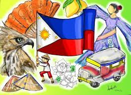

ABOUT PHILIPPINES
Southeast Asian island nation in the western Pacific Ocean. More than 7,000 islands and islets make up this archipelago, which is located around 800 kilometers (500 miles) off the coast of Vietnam. The most populated city in the nation is Quezon City, which is close to the capital city of Manila. Both are a part of Luzon, the largest island, and the National Capital Area (Metro Manila). Southeast-located Mindanao is the second-largest island in the Philippines.
FACTS ABOUT PHILIPPINES